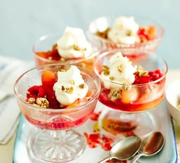

Quick peach Melba crumbles

Description
Raspberries, peaches and a crunchy granola topping make for an easy 10-minute dessert that's perfect for summer.
Ingredients
- 410g sliced peaches
- 1 tbsp butter
- 150g raspberries
- 100ml whipping cream
- 0,5tbsp icing sugar
- 100g granola
Steps
-
Pour the can of peaches, with the syrup, into a small saucepan over a medium heat. Add the butter and simmer until the peaches are hot.
Once simmering, add the raspberries and cook for 1-2 mins more until hot.
-
Meanwhile, put the cream in a large bowl with the icing sugar and whisk until lightly whipped.
-
Using a slotted spoon, put the peach Melba mixture into
four serving dishes and top each with a sprinkling of granola and a dollop of cream.